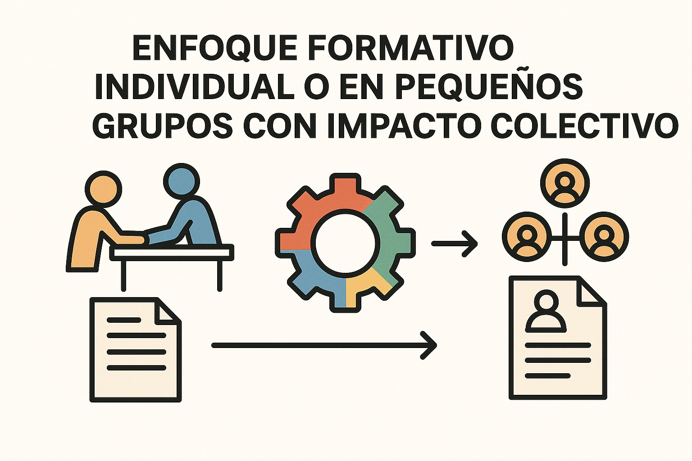
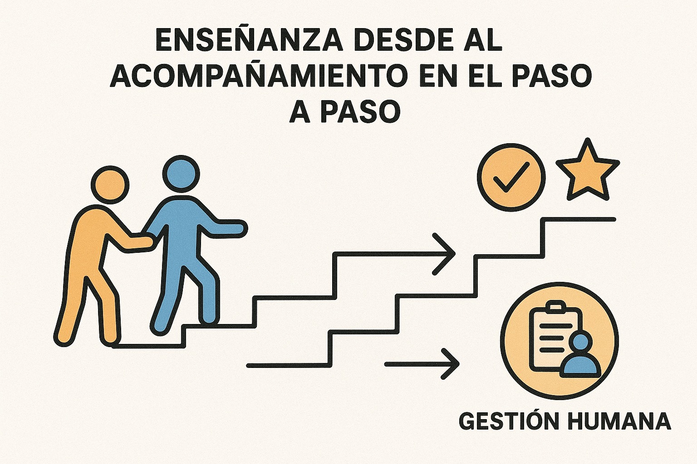

Niurka Yan
Profesional con 5 años de experiencia en gestión humana y 3 años capacitando equipos en temas de nómina, TSS, SISALRIL, IDOPPRIL y normativa laboral. Combino enfoque humano y precisión técnica para asegurar cumplimiento y resultados medibles.

Enfoque
Diagnóstico, plan de acción y acompañamiento continuo.

Metodología
Aprendizaje práctico orientado a resolver problemas reales.